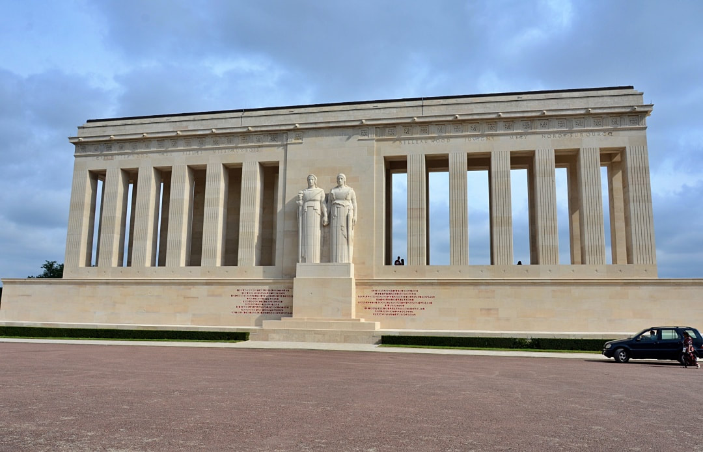
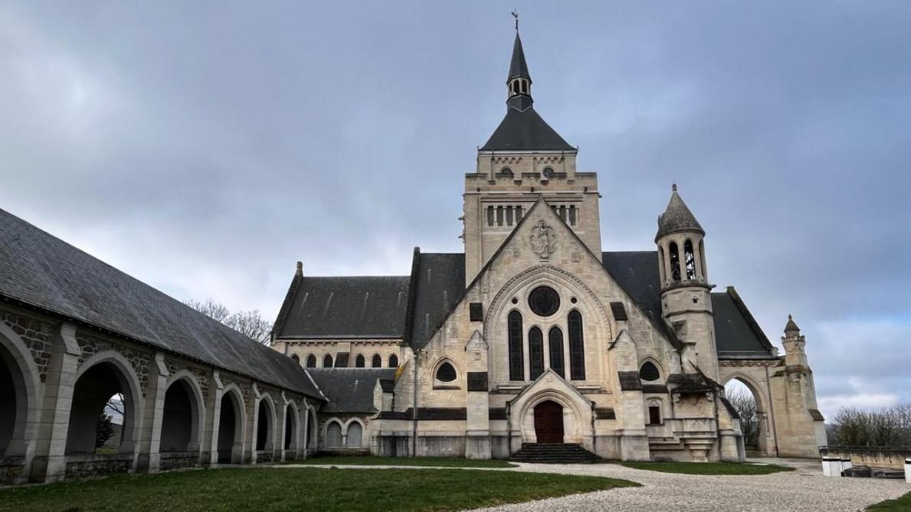
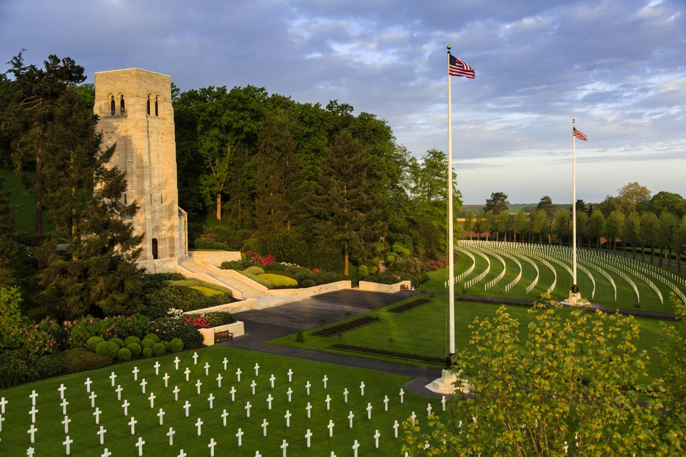
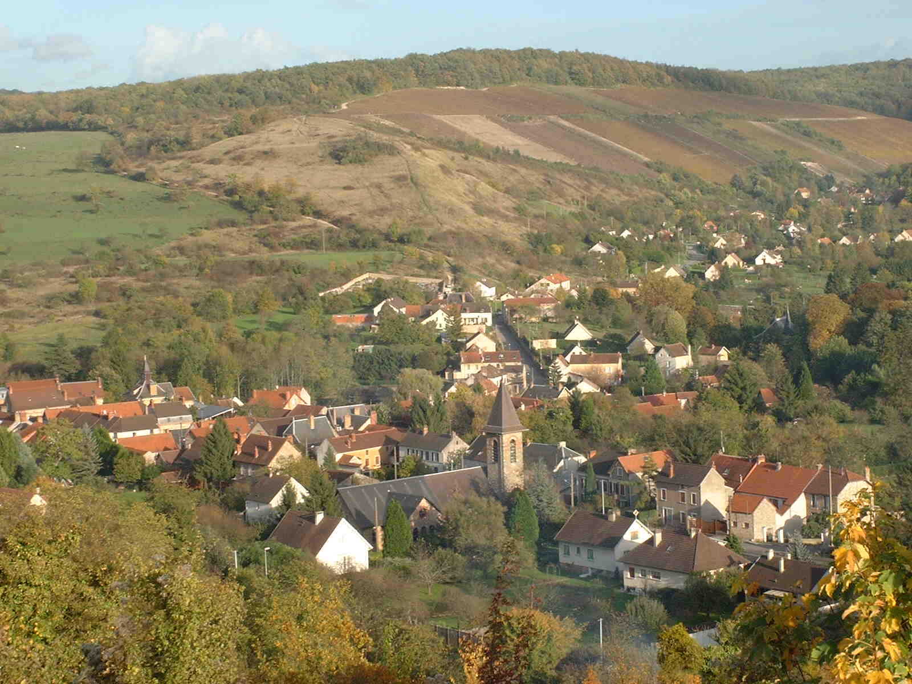
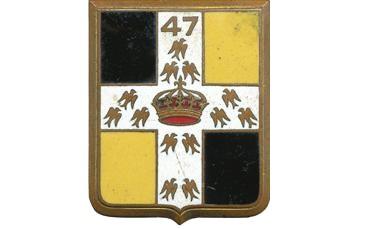
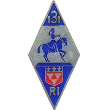

Dormans · Château-Thierry · Belleau Wood

Monument américain inauguré en 1937 sur la colline dominant Château-Thierry. Dédié aux soldats de la 1re Armée américaine. Colonnade de granit surmontée de deux figures allégoriques symbolisant la France et les États-Unis.

Ossuaire-chapelle du Souvenir dédié à la 2e bataille de la Marne. Construit entre 1921 et 1935, il renferme les restes de 1 500 soldats des deux guerres. Son clocher domine la Marne.

Forêt sanctuaire de la Marne — théâtre de la bataille des US Marines en juin 1918. Le cimetière américain d'Aisne-Marne jouxte les bois : 2 289 tombes. La forêt demeure propriété des États-Unis.

Entièrement anéanti en 1918, Jaulgonne fut reconstruit après-guerre. Le village que l'on voit aujourd'hui est né de ces cendres. Sa mémoire collective porte encore les traces de cet été terrible.
« Ce n'est pas la célébrité qui fait la bravoure. Ce sont des hommes simples, avec une peur simple et un devoir simple, qui ont tenu quand tout invitait à fuir. »— Hommage aux soldats de la Marne, 1918

Bataillons Sagnières et Taureau. Ils ont tenu la Ferme des Franquets et les pentes au-dessus de Jaulgonne lors de l'offensive Blücher-Yorck de mai 1918. Des poilus qui ont résisté jusqu'à la contre-attaque franco-américaine.

Positionnés à Varennes, face à la Marne. Ils ont maintenu la ligne défensive aux côtés des soldats américains, dans les gaz et sous les obus, la nuit du 15 juillet 1918.
Les « Rochers de la Marne ». Des hommes de l'Ohio, du Michigan, de Pennsylvanie. Le 15 juillet, encerclés à Mézy, sans ordre de retraite, dans les gaz, face à 6 régiments pendant 14 heures. Le 22 juillet, ils libèrent Jaulgonne.
« L'action des troupes américaines sur la Marne est l'une des pages les plus brillantes de l'histoire militaire. » — Général John J. Pershing, AEF